Previous slide Next slide Toggle fullscreen Open presenter view
Training Session:
Composition Crafting
Introducing Your Host
Markus Schweig
Principal Solutions Architect
markus.schweig@upbound.io
markuss
humoflife
Introductions
Tell us a bit about yourself:
What is your name and your role?
Which Crossplane project are you working on or want to start after this training?
What do you want to get out of this training?
Select the next training attendee for their introduction.
Composition Crafting Training Overview
Foundation
Upbound Access
Crossplane Concepts
Environment Setup And Review
Composition Crafting Training Overview
Compositons
What Are Compositions?
Building A Composition
Functions Introduction
Composition Revisions
Packages
Best Practices
Usages
A Brief Overview Of Composition Testing
Administration / Troubleshooting
Composition Crafting Training Overview
What's Next
Functions
Testing
Observability
Service Level Management
DevEx And
New Features
Training Guidelines
The more interaction, the better!
The instructor will ask you questions and involve you.
Please indicate when you have a question and when you are ready with training tasks through hand signals.
We'll take a brief break after the first hour.
Take notes to provide feedback at the end of today's session about what went well and what would have helped you more to achieve your training goals.
Prerequisites
For the exercises a Mac, Windows(WSL) or Linux system with access to the Internet is required.
An Upbound Cloud Spaces account and training team membership.
Kubectl v1.29.2+up CLI v0.32.0+crossplane CLI v1.17.1+Docker or Podman .A public github username to access labs and slides, or an admin who can clone and make the training repo available in an enterprise repo for attendees.
User level familiarity with Kubernetes is a plus.
Control Plane Framework
Framework for building Cloud Platforms
Define custom APIs for use by Service/Development Teams
Map APIs to managed resources that are frequently reconciled against external resources
Reduce load required from internal Platform Users due to ability to infer and implement rich requirements
Innovation behind the APIs, keeping interface stable and extensible while updating the way the resources are composed
Kubernetes Resource Model (KRM)
KRM
Uniform Declarative Metadata
Asynchronous Controllers
Authorization Policy
Admission Control
Audit Logging
Kubernetes Resource Model (KRM)
KRM:
apiVersion: s3.aws.upbound.io/v1beta1
kind: Bucket
metadata:
name: dev-team-assets
spec:
deletionPolicy: Delete
forProvider:
region: eu-west-1
tags:
Name: SampleBucket
Crossplane Resource Model (XRM)
XRM is a superset of the Kubernetes Resource Model (KRM)
Much of the XRM is specified in the Managed Resource API Design
Crossplane automatically injects some standard Crossplane Resource Model fields into all XRs such as writeConnectionSecretToRef and compositionRef.
Crossplane Resource Model (XRM)
XRM
KRM +
External Naming and Identity
Cross Resource References
Connection Secrets
Composition
Package Manager
Crossplane Resource Model (XRM)
XRM:
apiVersion: clusters.infra.example.com/v1alpha1
kind: CompositeCluster
metadata:
name: dev-cluster
spec:
parameters:
nodes:
count: 3
size: large
writeConnectionSecretToRef:
name: dev-cluster-kubeconfig
Crossplane Terminology
Composite Resource Claim (XRC): Resource requestComposite Resource Definition (XRD): Custom APIComposite Resource (XR): Aggregation of other XRs and MRsComposition : Declarative implementation of the API. Maps XRD to MRs. Can nest other XRsExternal Resource : Real resource often in a cloud such as AWS, GCP, Azure, and anywhere outside of the Crossplane management clusterManaged Resource (MR): Crossplane representation of external resource. For example, RDSInstance kinds are managed resources.
Definitions, Compositions, Claims
A definition defines a self-service custom cloud platform API for a particular purpose related to infrastructure resource lifecycle management.
A composition maps the defined self-service custom API to one or more Kubernetes provider controllers that interact with the respective provider APIs, for instance Azure KubernetesCluster.
A claim is issued by the users of the proprietary custom platform submitting the defined API parameters to receive infrastructure and services from the providers through the compositions
Crossplane Terminology
Provider : Cloud provider such as GCP, AWS, Azure offering IaaS, cloud networking, and managed services, and also those interfacing with arbitrary external systems, for example independent secret stores. Implemented as Kubernetes controller.Spec : The sub-resource of Kubernetes resources that represents the desired resource state.Status : The sub-resource of Kubernetes resources that represents the last known up-to-date information about the resource.
Upbound Terminology
Control Plane (CTP): Control plane with Crossplane, Providers and Functions.Managed Control Plane (MCP): CTP health managed by Upbound.Cloud Space : Fully managed hosting environment for CTPs.Group : Permissions boundary in a space.Team : Set of human and robot members that can be associated with a
Crossplane Pod Init Container
Init Container Installs the following and starts the Core Container
Crossplane CRDs
Configurations and Providers
Composite Resource Definitions
Compositions
Locks to manage package dependencies
Controller Configs to apply settings to installed Providers
Webhooks
Providers and Configurations
Crossplane Pod Core Container
Enforces the desired state of Crossplane resources.
Manages leader elections.
Processes webhooks.
Operates on a reconcile loop.
Constantly checking the status of deployed resources.
Corrects any “drift”.
Monitors resources through a Kubernetes watch, periodic polling, or both.
Requests that the API server notifies Crossplane of changes to objects through a watch.
Watched objects include Providers, managed resources and CompositeResourceDefinitions.
Crossplane Pod Core Container
For objects that Kubernetes can’t provide a watch for, Crossplane periodically polls the resource to find its state.
Poll-interval values can be changed. This affects load of the Crossplane pod and frequency of provider API calls.
Managed resources use polling.
Crossplane RBAC Pod
Init Container waits for
CompositeResourceDefinition and ProviderRevision resources.
Manager Container
Creates and binds RBAC roles to Provider ServiceAccounts, allowing them to control their managed resources.
Allows the Crossplane ServiceAccount to create managed resources.
Creates ClusterRoles to access Crossplane resources in specific namespaces.
Use the ClusterRoles to grant access to all Crossplane resources in the cluster.
Use the Roles to only grant access to Crossplane Claims.
Provider Pods
Enable Crossplane to provision infrastructure on an external service.
Create new Kubernetes APIs and map them to external APIs.
Responsible for all aspects of connecting to non-Kubernetes resources.
Family providers for AWS, Azure, GCP to keep number of CRDs in line with use and organizational needs.
Prerequisites for Cloud Spaces Labs
Prerequisites for the Cloud Spaces Labs
Let's take a look to ensure that your system is ready for our labs. The next slide details what you will initially need.
We will set up Control Planes in Upbound Cloud Spaces, and then using them to provision external resources.
Prerequisites for the Cloud Spaces Labs
A Linux, Mac or Windows(WSL) system
Docker (for M1 Mac, please download the Apple Silicon version of Docker).Kubectl binary (minimum v1.29.2 , use kubectl version --client=true)Instructor provided numeric AWS account id to a training account that can provision resources.
Marketplace Upbound Cloud Spaces invite accepted.
Public Github username provided to access labs.
Environment Setup
As a requirement for the Compositions Training we are going to complete the following labs.
Lab 01: Create a Control Plane
Lab 02: Connect to a Control Plane
Lab 03: Installing an Official Provider
Lab 04: Deploying a Managed Resource
Using Control Planes
In these labs we’ll create
Lab 01
Create a Control Plane
Lab 01: Install the up
Install the up CLI following the instructions at https://docs.upbound.io/reference/cli/
The easiest way is to download and run the install script:
$ curl -sL "https://cli.upbound.io" | sh
Up downloaded successfully!
By proceeding, you are accepting to comply with terms and conditions in https://licenses.upbound.io/upbound-software-license.html
Run the following commands to finish installation:
sudo mv up /usr/local/bin/
up version
Visit https://upbound.io to get started. nice day! mv up /usr/local/bin/
Lab 01: Verify the up
Minimum up version should be v0.34.1. Your server and spaces controller version may show as unknown until your context points to a control plane.
$ up version
Client:
Version: v0.34.1
Go Version: go1.22.6
Git Commit: e1d3d61
OS/Arch: darwin/arm64
Server:
Crossplane Version: v1.16.2-up.2
Spaces Controller Version: Upbound Cloud Managed
Lab 01: Login to Upbound Cloud Spaces
Login to Upbound Cloud Spaces. This will direct you to a browser.
up login -a <ACCOUNT_NAME>
You should see a message indicating that you are logged in, e.g.
<username> logged in
List your orgaanizations.
up org list
Lab 01: Upbound Cloud Spaces Topology
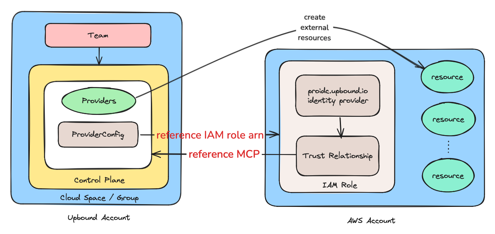
Lab 01: Upbound Cloud Spaces Accounts, Spaces, Groups, Teams
Account and orgnization are synonymous.Each Upbound Account may have one or more spaces .
Each space has a default group and may have one or more custom groups .
Each group may have an arbitrary number of control planes .
Each team may be associated with one or more groups .
Lab 01: Connect to a Cloud Space Group
Run up ctx
The top level is your organization.
Select your organization, e.g. your sandbox account.
Select your cloud space, e.g. upbound-aws-us-east-1.
Select your training group, e.g. train-....
Run up ctx . and verify the output is as follows:
Kubeconfig context "upbound" : Upbound <account>/upbound-aws-us-east-1/<train-...>
Lab 01: Create a Control Plane
With your kubeconfig pointed at the training group in the space, create a Control Plane. Replace CUSTOMER ID
export CUSTOMER="Your customer name abbreviation"
export ID="Your training attendee identity"
cat <<EOF | kubectl apply -f -
apiVersion: spaces.upbound.io/v1beta1
kind: ControlPlane
metadata:
name: train-${CUSTOMER}-ctp-${ID}
namespace: train-${CUSTOMER}
spec:
writeConnectionSecretToRef:
name: train-${CUSTOMER}-ctp-${ID}
namespace: train-${CUSTOMER}
EOF
The first managed Control Plane you create in a Space takes around 5 minutes to get into a Ready state. Check its readiness using the following command.
kubectl get controlplane train-${CUSTOMER} -ctp-${ID}
NAME CROSSPLANE READY MESSAGE AGE
train-<CUSTOMER>-ctp-<ID> 1.16.2-up.2 True Available 2m6s
Lab 01: Check to see what Control Planes are running
kubectl get ctp
NAME AGE
train-<CUSTOMER>-ctp-<ID> 4d7h
train-<CUSTOMER>-ctp-<ID> 2d5h
Lab 01 Complete.
Lab 02
Connect to your Control Plane
Lab 02: Prerequisites
In this lab, we will be connecting to your Control Plane using the up
Lab 02: Check kubectl context
Ensure that your kubectl context is set to the correct spaces cluster. If not, use the right context :
$ kubectl config current-context
upbound
Lab 02: Connect to your Control Plane
Connect to your Control Plane with the up ctx
$ export ACCOUNT="name of your training account"
$ up ctx ${ACCOUNT}/upbound-aws-us-east-1/train-${CUSTOMER}/train-${CUSTOMER}-ctp-${ID}
This command updates your current kubecontext.
Lab 02: Validate your Control Plane
You’re now connected to your Control Plane directly. Confirm this is the case by trying to list the CRDs in your control plane:
$ kubectl get crds
$ kubectl get pods -A
To disconnect from your Control Plane and switch back to your previous context:
$ up ctx -
Lab 02 Complete.
LAB 01 + 02 : Summary
At the end of Labs 01 and 02 we have:
Installed up-cli
Created a Control Plane
Connected to a Control Plane
Reviewed what gets deployed when Control Plane is installed on a spaces cluster
LAB 03 + 04: Installing the AWS Provider and Deploying a Managed Resource
In these labs we’ll install a provider and deploy a Managed resource
Lab 03
Installing Official Providers
Lab 03: Prerequisites
Providers extend Crossplane to enable infrastructure resource provisioning.
In this lab, we will extend Crossplane to provision infrastructure on AWS by deploying the Official AWS provider by Upbound .
Ensure that you have completed Lab 02, or you have a running Control Plane instance.
Lab 03: Search the Upbound Marketplace
Go to Upbound Marketplace and search for “provider-family-aws”
Lab 03: Search the Upbound Marketplace
There are several providers. Look for the provider with the OFFICIAL Label, which is supported by Upbound and click on it.
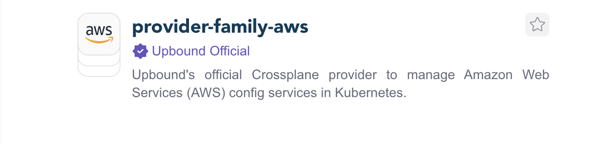
Lab 03: Search the Upbound Marketplace
You should have more details about the package, including a link to the newest version and a dropdown to select versions.
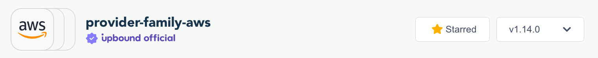
Lab 03: Get the Installation Manifest
To obtain an Installation Manifest, select the most recent version and search for the service-scoped provider. Next, click on the “Install Manifest” button, and a window will appear:
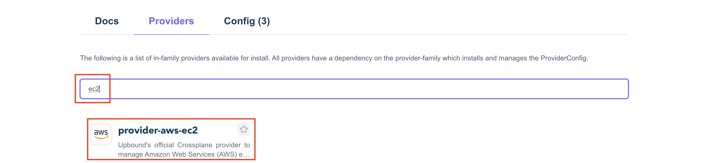
Lab 03: Get the Installation Manifest
Copy the official AWS provider installation manifest to your system, create a file provider-aws-ec2.yaml with the copied contents. The main difference will be the version, as a new release of provider-aws comes out frequently.
Below is the manifest to install the service scoped provider. Note that only the ec2 controller and CRDs will be installed:
apiVersion: pkg.crossplane.io/v1
kind: Provider
metadata:
name: provider-aws-ec2
spec:
package: xpkg.upbound.io/upbound/provider-aws-ec2:v1.14.0
Lab 03: Install the Provider
Install the official AWS provider using the file that you created in the last step:
$ kubectl apply -f provider-aws-ec2.yaml
provider.pkg.crossplane.io/provider-aws-ec2 created
Lab 03: Verify Installation
Verify that the provider package is INSTALLED HEALTHY
$ kubectl get -f provider-aws-ec2.yaml
NAME INSTALLED HEALTHY PACKAGE AGE
provider-aws-ec2 True True xpkg.upbound.io/upbound/provider-aws-ec2:v1.14.0 28s
Lab 03: Verify Installation
You can also verify installation using the provider.pkg CRD. Note that in the family scoped providers, a common package called provider-family-aws is automatically brought in as a prerequisite. This provider contains the ProviderConfig that is shared among all the scoped providers.
$ kubectl get provider.pkg
NAME INSTALLED HEALTHY PACKAGE AGE
provider-aws-ec2 True True xpkg.upbound.io/upbound/provider-aws-ec2:v1.14.0 8m35s
upbound-provider-family-aws True True xpkg.upbound.io/upbound/provider-family-aws:v1.14.0 8m17s
Lab 03: Verify Installation
Verify that the provider CRDs are defined on the cluster. Note that only CRDs from the EC2 group have been installed.
With scoped providers, you’ll need to install a package for each of the groupings of AWS services you intend to use (Lambda, RDS, IAM, etc.)
$ kubectl get crd | grep aws.upbound.io
amicopies.ec2.aws.upbound.io 2023-12-23T07:15:35Z
amilaunchpermissions.ec2.aws.upbound.io 2023-12-23T07:15:35Z
amis.ec2.aws.upbound.io 2023-12-23T07:15:35Z
...
...
...
vpngatewayattachments.ec2.aws.upbound.io 2023-12-23T07:15:38Z
vpngatewayroutepropagations.ec2.aws.upbound.io 2023-12-23T07:15:38Z
vpngateways.ec2.aws.upbound.io 2023-12-23T07:15:38Z
Lab 03: Verify Installation
Verify that the controller pod for provider-aws is Running Ready
$ kubectl -n crossplane-system get pods | grep provider-aws-ec2
provider-aws-ec2-4805a8dbe18c-848fb7888c-n8t64 1/1 Running 0 11m
Lab 03 Complete.
Lab 04
Deploying a Managed Resource
Lab 04: Prerequisites
Managed resources are the Crossplane representation of the cloud provider resources.
In this lab, we will be deploying an AWS VPC with Crossplane.
Ensure that you have completed Lab 03, or you have a running Control Plane instance and provider-aws-ec2 is installed.
Lab 04: Create a ProviderConfig
The ProviderConfig references an IAM Role ARN in the target account:
$ export TARGET_AWS_ACCOUNT_ID="obtain id from your instructor"
$ export CUSTOMER="Your customer name abbreviation"
$ cat << EOF > providerconfig-aws.yaml
apiVersion: aws.upbound.io/v1beta1
kind: ProviderConfig
metadata:
name: default
spec:
credentials:
source: Upbound
upbound:
webIdentity:
roleARN: arn:aws:iam::${TARGET_AWS_ACCOUNT_ID}:role/train-${CUSTOMER}-crossplane-1
EOF
Lab 04: Apply And Verify ProviderConfig
kubectl apply -f providerconfig-aws.yaml
Verify that the ProvierConfig was created.
kubectl get providerconfig.aws.upbound.io/default
NAME AGE
default 16h
Note, if you do not see a default ProviderConfig, its yaml may be incorrect.
Check the yaml indentation.
Check the role arn.
Lab 04: Target Account OIDC Configuration
The target AWS account has a
proidc.upbound.io identity provider,
and an IAM role referencing it.
The associated role policies determine the actions that an Upbound Control Plane can perform.
Lab 04: Target Account OIDC Configuration
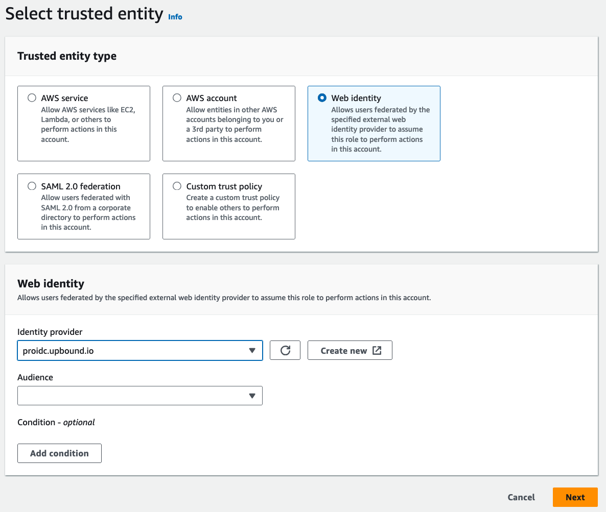
Lab 04: IAM Role Trust Relationship
A trust relationship allows specific Control Planes to connect.
{
"Version" : "2012-10-17" ,
"Statement" : [
{
"Effect" : "Allow" ,
"Principal" : {
"Federated" : "arn:aws:iam::<AWS-TARGET-ACCOUNT-ID>:oidc-provider/proidc.upbound.io"
},
"Action" : "sts:AssumeRoleWithWebIdentity" ,
"Condition" : {
"StringLike" : {
"proidc.upbound.io:aud" : "sts.amazonaws.com" ,
"proidc.upbound.io:sub" : "mcp:<UPBOUND_ACCOUNT>/train-<CUSTOMER>-ctp-*:provider:provider-aws"
}
}
}
]
}
Lab 04: Provision Resources
Now, we are ready to provision AWS resources. Create a VPC
$ vi vpc-aws.yaml
apiVersion: ec2.aws.upbound.io/v1beta1
kind: VPC
metadata:
name: training-vpc
spec:
forProvider:
region: us-west-1
cidrBlock: 172.16.0.0/16
tags:
Name: TrainingVpc
$ kubectl apply -f vpc-aws.yaml
vpc.ec2.aws.upbound.io/training-vpc created
Lab 04: Check the status of the VPC object
Verify that it is SYNCED READY
$ kubectl get vpc.ec2.aws.upbound.io
NAME READY SYNCED EXTERNAL-NAME AGE
training-vpc True True vpc-048bfb31cc799516f 79s
Lab 04: Check the Events
You can always check the events on the object to find the problems if something goes wrong:
$ kubectl describe vpc.ec2.aws.upbound.io training-vpc
...
Status:
At Provider:
Arn: arn:aws:ec2:us-west-1:<AWS-TARGET-ACCOUNT-ID>:vpc/vpc-048bfb31cc799516f
assignGeneratedIpv6CidrBlock: false
Cidr Block: 172.16.0.0/16
Instance Tenancy: default
ipv6AssociationId:
ipv6CidrBlock:
ipv6CidrBlockNetworkBorderGroup:
ipv6IpamPoolId:
ipv6NetmaskLength: 0
Main Route Table Id: rtb-0dec0323bcdb859d2
Owner Id: <AWS-TARGET-ACCOUNT-ID>
Tags:
Name: TrainingVpc
Crossplane - Kind: vpc.ec2.aws.upbound.io
Crossplane - Name: training-vpc
Crossplane - Providerconfig: default
Tags All:
Name: TrainingVpc
Crossplane - Kind: vpc.ec2.aws.upbound.io
Crossplane - Name: training-vpc
Crossplane - Providerconfig: default
Conditions:
Last Transition Time: 2023-12-23T07:39:50Z
Reason: Available
Status: True
Last Transition Time: 2023-12-23T07:39:35Z
Reason: Success
Status: True
Type: LastAsyncOperation
Last Transition Time: 2023-12-23T07:39:35Z
Reason: Finished
Status: True
Type: AsyncOperation
Events:
Type Reason Age From Message
---- ------ ---- ---- -------
Normal CreatedExternalResource 2m40s managed/ec2.aws.upbound.io/v1beta1, kind=vpc Successfully requested creation of external resource
Warning CannotUpdateManagedResource 2m29s managed/ec2.aws.upbound.io/v1beta1, kind=vpc Operation cannot be fulfilled on vpcs.ec2.aws.upbound.io "training-vpc" : the object has been modified; please apply your changes to the latest version and try again
Lab 04: Verify Resource Creation
Use the following commands to get information for your VPC:
kubectl get vpckubectl get vpc training-vpc -o jsonpath='{.status}'|jqkubectl desscribe vpc training-vpc
Lab 04: Verify Resource Creation
In your own AWS account , you may copy the external name and use it with the following command
aws --profile default ec2 describe-vpcs --region us-west-1 --vpc-ids <PASTE_EXTERNAL_NAME_HERE>
In your own AWS account , you may go to the VPCs on the AWS console and verify that the corresponding VPC is created there. You can find VPC ID EXTERNAL-NAME kubectl get vpc
Lab 04: Cleanup
Delete the VPC object from cluster:
$ kubectl delete vpc.ec2.aws.upbound.io training-vpc
vpc.ec2.aws.upbound.io "training-vpc" deleted
Lab 04 Complete.
LAB 03 + 04 : Summary
At the end of Labs 03 and 04 we have:
Deployed the AWS Provider using a Crossplane Package
Created a Secret using AWS credentials
Created a ProviderConfig
Deployed a Managed Resource
Reviewed the status of the Managed Resource
Reminder: Managed Resource
Crossplane resources are k8s objects. The resource configuration is set in the specification forProvider.
apiVersion: rds.aws.upbound.io/v1beta1
kind: Instance
metadata:
name: rdspostgresql
spec:
forProvider:
instanceClass: db.t3.small
username: masteruser
allocatedStorage: 20
engine: postgres
engineVersion: "9.6"
skipFinalSnapshot: true
writeConnectionSecretToRef:
namespace: upbound-system
name: aws-rdspostgresql-conn
Limits of Managed Resources
While Managed Resources are very powerful, there are some limitations:
High-fidelity APIs mean there are a lot of things to configure in each Managed Resource. Could we pre-configure some of the resources?
In many cloud deployments, multiple Managed Resources are required. Can we combine them into a single Resource?
In many cases we’d like to abstract the resource. Can users ask for a Database instead of a cloud-provider specific DB?
What is Composition?
An extension to the Kubernetes Resource Model (KRM)
A way of composing multiple related Managed Resources together
A way for Infrastructure Teams to easily define a self-service API that end-users can consume with any tool that supports Kubernetes CRDs.
Composition
Composition is a Crossplane feature that allows you to define new Custom Resources from a set of composed Managed Resources.
A Composite Resource Definition (XRD) can be used to combine any number of Kubernetes CRDs to build a service catalog.
Composition: Separation of Control
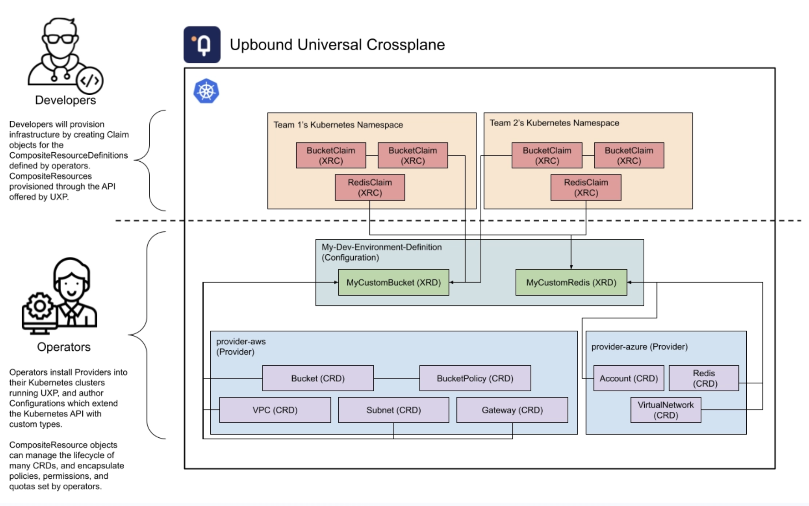
Composed Resources
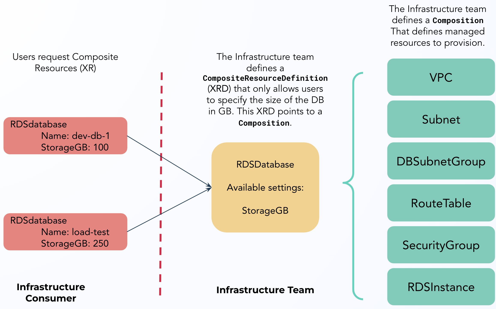
Composed Resources 2
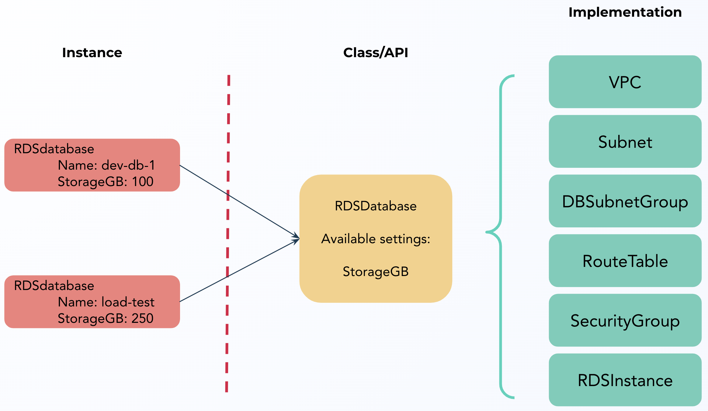
Composition Terms
CompositeResource (XR) : This is an infrastructure resource composed of a set of Managed Resources. For example, a CompositeNetwork might include a VPC, Subnets, Gateways and Route Tables.
CompositeResourceDefinition (XRD) : this is the API of the Composition. In the XRD definition, infrastructure operators define what spec fields from the underlying Managed Resources are exposed.
Composition : A Composition tells Crossplane how to combine Managed Resources.
Composition Summary So Far...
Using Composition and CompositeResourceDefinitions , we provision a Composed set of Managed Resources and provide an abstract API to end users that limits what they are allowed to configure.
But what if we wanted to get even more abstract? What if we wanted to offer users a “Database” that hid the underlying implementation details?
For example, if a user requests a PostgresSQLInstance that could be provisioned in any of AWS, Azure or GCP depending on the request.
Introducing Claims
A Claim is an optional offering on a CompositeResourceDefinition , where a user can request a CompositeResource that may be fulfilled by multiple Compositions .
Claims are also known as XRC s.
Similar to Kubernetes Persistent Volumes (PV) and Persistent Volume Claims (PVC), a Claim can bind to an existing resource or Crossplane can provision a new XR that satisfies the Claim.
Claims are namespace-scoped, while CompositeResources are cluster-scoped. This allows Infrastructure Operators to isolate tenant infrastructure using Kubernetes namespaces.
Cluster vs. Namespace Scope
ManagedResources , ProviderConfigs and Composite Resources are all cluster scoped. This means they exist outside of any Kubernetes namespace.
This enables Crossplane to model complex relationships between XRs that may span namespace boundaries - for example MySQLInstances spread across multiple namespaces can all share a VPC that exists above any namespace.
A Claim is a namespaced proxy for a Composite Resource .
LAB 05: Building a Composition
LAB 05
In this lab we’ll install a Composition, an XRD, and request a Claim
Prerequisites
Compositions allow platform builders to define new custom resources that are composed of managed resources.CompositePostgreSQLInstance VPC, Subnet, DBSubnetGroup, InternetGateway, RouteTable, SecurityGroup, and RDSInstance.
Ensure that you have completed Lab 04, or you have a running Control Plane running with provider-aws-ec2 and a providerConfig that is trusted by a target AWS account, e.g. through an OIDC setup.
The first step when building compositions is defining a new Kind for the Composite Resource . Composite Resources are defined by a CompositeResourceDefinition (XRD).
Inspect and create this CompositeResourceDefinition on the cluster, which will:
Define a CompositePostgreSQLInstance CompositeResource (XR)
Offer a PostgreSQLInstance claim (XRC)
$ git clone git@github.com:UpboundCare/<collaboration-repo>.git
$ git clone https://github.com/UpboundCare/<collaboration-repo>.git
$ cd composition-crafting/<session-n>
$ kubectl apply -f lab05/cloud-spaces/configuration/definition.yaml
compositeresourcedefinition.apiextensions.crossplane.io/compositepostgresqlinstances.database.example.org created
Check the status of the CompositeResourceDefinition ESTABLISHED OFFERED
$ kubectl get xrd
NAME ESTABLISHED OFFERED AGE
compositepostgresqlinstances.database.example.org True True 21s
Verify that the new types are defined on the cluster:
$ kubectl get crd | grep postgresqlinstance
compositepostgresqlinstances.database.example.org 2023-12-23T09:21:29Z
postgresqlinstances.database.example.org 2023-12-23T09:21:29Z
As in Lab3, we need to add the RDS CRDs and controller to our cluster. Update your provider-aws-ec2.yaml from Lab 03 so that both EC2 and RDS families are installed:
$ vi lab05/configuration/provider-aws.yaml
apiVersion: pkg.crossplane.io/v1
kind: Provider
metadata:
name: provider-aws-ec2
spec:
package: xpkg.upbound.io/upbound/provider-aws-ec2:v1.14.0
---
apiVersion: pkg.crossplane.io/v1
kind: Provider
metadata:
name: provider-aws-rds
spec:
package: xpkg.upbound.io/upbound/provider-aws-rds:v1.14.0
$ kubectl apply -f lab05/cloud-spaces/configuration/provider-aws.yaml
provider.pkg.crossplane.io/provider-aws-ec2 unchanged
provider.pkg.crossplane.io/provider-aws-rds created
Make sure everything is there, INSTALLED HEALTHY
$ kubectl get provider.pkg
or
$ kubectl get providers
NAME INSTALLED HEALTHY PACKAGE AGE
provider-aws-ec2 True True xpkg.upbound.io/upbound/provider-aws-ec2:v1.14.0 5h44m
provider-aws-rds True True xpkg.upbound.io/upbound/provider-aws-rds:v1.14.0 65s
upbound-provider-family-aws True True xpkg.upbound.io/upbound/provider-family-aws:v1.14.0 5h44m
We template resources in a Composition Pipeline . Use Composition Functions in Pipelines to do it.
Each pipeline step calls a function. Install function-patch-and-transform from the Upbound marketplace by clicking on the Install Manifest button an copying the contents:
apiVersion: pkg.crossplane.io/v1beta1
kind: Function
metadata:
name: function-patch-and-transform
spec:
package: xpkg.upbound.io/crossplane-contrib/function-patch-and-transform:v0.7.0
$ kubectl apply -f lab05/cloud-spaces/configuration/functions.yaml
function.pkg.crossplane.io/function-patch-and-transform created
Verify the function is INSTALLED and HEALTHY:
$ kubectl get function.pkg
NAME INSTALLED HEALTHY PACKAGE AGE
function-patch-and-transform True True xpkg.upbound.io/crossplane-contrib/function-patch-and-transform:v0.7.0 13s
Now that the function is installed, we can call it in a Composition Pipeline.
Functions in a Composition Pipeline
We need to configure several Managed Resources. When creating resources, there are some settings the Platform Engineer wants to set, and others we allow the user to set.
Resource templates are generated by another custom resource called Composition .
Inspect and create this Composition on the cluster:
$ kubectl apply -f lab05/cloud-spaces/configuration/composition-aws.yaml
composition.apiextensions.crossplane.io/vpcpostgresqlinstances.aws.database.example.org created
Create a Database Password
When creating our database, we'll need to create a database password. In Crossplane, sensitive values are stored in Kubernetes Secrets. Crossplane secretRefs are used to get the name, namespace and key of a secret.
$ kubectl -n upbound-system create secret generic getting-started-db-pass --from-literal=password="Upb0undR0cks"
secret/getting-started-db-pass created
Claim Infrastructure Resources
Create the following Composite Resource Claim (XRC) object:
$ vi lab05/cloud-spaces/solution/claim-aws.yaml
apiVersion: database.example.org/v1alpha1
kind: PostgreSQLInstance
metadata:
name: my-db-aws
namespace: default
spec:
parameters:
storageGB: 20
passwordSecretName: getting-started-db-pass
compositionSelector:
matchLabels:
uxp-guide: getting-started
writeConnectionSecretToRef:
name: db-conn-aws
$ kubectl apply -f lab05/cloud-spaces/configuration/claim-aws.yaml
postgresqlinstance.database.example.org/my-db-aws created
Check Managed Resources
Check all the managed resources created for this XRC object. managed is a Kubernetes API category that contains all Crossplane Managed Resources. We use a label selector to select our DB:
Check Managed Resources
$ kubectl get managed -l crossplane.io/claim-name=my-db-aws
NAME SYNCED READY EXTERNAL-NAME AGE
route.ec2.aws.upbound.io/my-db-aws-g2xmk-xjbvm True True r-rtb-06c0661b1da416b301080289494 8m41s
NAME SYNCED READY EXTERNAL-NAME AGE
internetgateway.ec2.aws.upbound.io/my-db-aws-g2xmk-rmhqd True True igw-086115a88f4a9a03c 8m44s
NAME SYNCED READY EXTERNAL-NAME AGE
routetableassociation.ec2.aws.upbound.io/my-db-aws-g2xmk-4n97d True True rtbassoc-0f117dfdee3ecf080 8m46s
routetableassociation.ec2.aws.upbound.io/my-db-aws-g2xmk-9vlfl True True rtbassoc-03b38208dd5f8e30c 8m46s
routetableassociation.ec2.aws.upbound.io/my-db-aws-g2xmk-kbmrp True True rtbassoc-09190825e224bd0f9 8m46s
NAME SYNCED READY EXTERNAL-NAME AGE
routetable.ec2.aws.upbound.io/my-db-aws-g2xmk-m6wtx True True rtb-06c0661b1da416b30 8m46s
NAME SYNCED READY EXTERNAL-NAME AGE
securitygrouprule.ec2.aws.upbound.io/my-db-aws-g2xmk-wnpqg True True sgrule-573104242 8m46s
NAME SYNCED READY EXTERNAL-NAME AGE
securitygroup.ec2.aws.upbound.io/my-db-aws-g2xmk-vvmlx True True sg-02d42653a50f73324 8m46s
NAME SYNCED READY EXTERNAL-NAME AGE
subnet.ec2.aws.upbound.io/my-db-aws-g2xmk-bdxwd True True subnet-04d8f3d8cebfbf022 8m47s
subnet.ec2.aws.upbound.io/my-db-aws-g2xmk-fftjl True True subnet-00ae0a5836e5d1443 8m47s
subnet.ec2.aws.upbound.io/my-db-aws-g2xmk-z82zb True True subnet-093a0eef78c8722e2 8m47s
NAME SYNCED READY EXTERNAL-NAME AGE
vpc.ec2.aws.upbound.io/my-db-aws-g2xmk-57vlc True True vpc-096acf290de54a3ba 8m51s
NAME SYNCED READY EXTERNAL-NAME AGE
instance.rds.aws.upbound.io/my-db-aws-g2xmk-2cx62 True True db-ZAG4B6DXFCPV5JQSKFPFJYGUUI 8m51s
NAME SYNCED READY EXTERNAL-NAME AGE
subnetgroup.rds.aws.upbound.io/my-db-aws-g2xmk-z5ndq True True my-db-aws-g2xmk-z5ndq 8m53s
Fast Query
Alternatively to kubectl get managed, you may use up alpha query managed. The latter is much faster, but not as feature rich.
Fast Query
NAME SYNCED READY EXTERNAL-NAME AGE
internetgateway.ec2.aws.upbound.io/my-db-aws-g2xmk-rmhqd True True igw-086115a88f4a9a03c 30m
NAME SYNCED READY EXTERNAL-NAME AGE
route.ec2.aws.upbound.io/my-db-aws-g2xmk-xjbvm True True r-rtb-06c0661b1da416b301080289494 30m
NAME SYNCED READY EXTERNAL-NAME AGE
routetable.ec2.aws.upbound.io/my-db-aws-g2xmk-m6wtx True True rtb-06c0661b1da416b30 30m
NAME SYNCED READY EXTERNAL-NAME AGE
routetableassociation.ec2.aws.upbound.io/my-db-aws-g2xmk-4n97d True True rtbassoc-0f117dfdee3ecf080 30m
routetableassociation.ec2.aws.upbound.io/my-db-aws-g2xmk-9vlfl True True rtbassoc-03b38208dd5f8e30c 30m
routetableassociation.ec2.aws.upbound.io/my-db-aws-g2xmk-kbmrp True True rtbassoc-09190825e224bd0f9 30m
NAME SYNCED READY EXTERNAL-NAME AGE
securitygroup.ec2.aws.upbound.io/my-db-aws-g2xmk-vvmlx True True sg-02d42653a50f73324 30m
NAME SYNCED READY EXTERNAL-NAME AGE
securitygrouprule.ec2.aws.upbound.io/my-db-aws-g2xmk-wnpqg True True sgrule-573104242 30m
NAME SYNCED READY EXTERNAL-NAME AGE
subnet.ec2.aws.upbound.io/my-db-aws-g2xmk-bdxwd True True subnet-04d8f3d8cebfbf022 30m
subnet.ec2.aws.upbound.io/my-db-aws-g2xmk-fftjl True True subnet-00ae0a5836e5d1443 30m
subnet.ec2.aws.upbound.io/my-db-aws-g2xmk-z82zb True True subnet-093a0eef78c8722e2 30m
NAME SYNCED READY EXTERNAL-NAME AGE
vpc.ec2.aws.upbound.io/my-db-aws-g2xmk-57vlc True True vpc-096acf290de54a3ba 30m
NAME SYNCED READY EXTERNAL-NAME AGE
instance.rds.aws.upbound.io/my-db-aws-g2xmk-2cx62 True True db-ZAG4B6DXFCPV5JQSKFPFJYGUUI 30m
NAME SYNCED READY EXTERNAL-NAME AGE
subnetgroup.rds.aws.upbound.io/my-db-aws-g2xmk-z5ndq True True my-db-aws-g2xmk-z5ndq 30
Install the crossplane CLI.curl -sL "https://raw.githubusercontent.com/crossplane/crossplane/main/install.sh" | sh
sudo mv crossplane /usr/local/bin
crossplane --help
Visit https://crossplane.io to get started.
Tracing Compositions
The crossplane CLI can trace Claims and Composite resources in a tree-like format.
Tracing Compositions
$ crossplane beta trace postgresqlinstance.database.example.org/my-db-aws
NAME SYNCED READY STATUS
PostgreSQLInstance/my-db-aws (default) True True Available
└─ CompositePostgreSQLInstance/my-db-aws-g2xmk True True Available
├─ InternetGateway/my-db-aws-g2xmk-rmhqd True True Available
├─ RouteTableAssociation/my-db-aws-g2xmk-4n97d True True Available
├─ RouteTableAssociation/my-db-aws-g2xmk-9vlfl True True Available
├─ RouteTableAssociation/my-db-aws-g2xmk-kbmrp True True Available
├─ RouteTable/my-db-aws-g2xmk-m6wtx True True Available
├─ Route/my-db-aws-g2xmk-xjbvm True True Available
├─ SecurityGroupRule/my-db-aws-g2xmk-wnpqg True True Available
├─ SecurityGroup/my-db-aws-g2xmk-vvmlx True True Available
├─ Subnet/my-db-aws-g2xmk-bdxwd True True Available
├─ Subnet/my-db-aws-g2xmk-fftjl True True Available
├─ Subnet/my-db-aws-g2xmk-z82zb True True Available
├─ VPC/my-db-aws-g2xmk-57vlc True True Available
├─ Instance/my-db-aws-g2xmk-2cx62 True True Available
└─ SubnetGroup/my-db-aws-g2xmk-z5ndq True True Available
Check Composite Resource Claim Status
Eventually (in around 10 mins) you should see our XRC is ready.
$ kubectl -n default get postgresqlinstance
NAME SYNCED READY CONNECTION-SECRET AGE
my-db-aws True True db-conn 8m53s
Resource Status
There are two types of Status to pay attention to in a Claim. SYNCED means the claim can render properly, and READY means all the underlying resources are in a READY state.
Wait for enough time until all managed resources are READY SYNCED.
Connection Details
ConnectionDetails are a Crossplane feature where the Composition returns a Kubernets secret to the Claim owner.
Validate that your claims connection details are available in a k8s secret named db-conn-aws
Connecton Details
$ kubectl -n default describe secrets db-conn-aws
Name: db-conn-aws
Namespace: default
Labels: <none>
Annotations: <none>
Type: connection.crossplane.io/v1alpha1
Data
====
endpoint: 50 bytes
password: 11 bytes
username: 32 bytes
Decode Connection Details
kubectl -n default get secrets db-conn-aws -o jsonpath='{.data}' |jq .endpoint|tr -d '"' |base64 -d
upbound-e169c29b-4516-4399-b10a-c2226987e2b4.c0cmytscebma.us-east-1.rds.amazonaws.com:5432%
kubectl -n default get secrets db-conn-aws -o jsonpath='{.data}' |jq .username|tr -d '"' |base64 -d
masteruser%
kubectl -n default get secrets db-conn-aws -o jsonpath='{.data}' |jq .password|tr -d '"' |base64 -d
Upb0undR0cks%
Cleanup (skip if you are proceeding with Lab 06):
Delete the PostgreSQLInstance
$ kubectl -n default delete PostgreSQLInstance my-db-aws
Verify that corresponding managed resources are being deleted and eventually disappear:
$ kubectl get managed -l crossplane.io/claim-name=my-db-aws
Lab 05 Complete.
LAB 05: Summary
Deployed a CompositeResourceDefinition to a cluster
Deployed a Composition to a cluster
Created a Database Claim
Selecting a Composition
When multiple compositions can satisfy a Claim, how to choose one?
First, there is a defaultCompositionRef in the XR .
In addition, you can use a compositionSelector:
compositionSelector:
matchLabels:
connectivity: private
This could be used, for example, to determine whether an AWS RDS Instance, a GCP CloudSQLInstance or an Azure SQLServer based composition satisfies this PostgresSQLDB instance.
XRD Reference
Composite Resource Definition
Key Topics:
Connection Secret Keys : what secrets can be returned from the Composition?Claim Definition : define optional claimDefault Composition Reference : defaults to using this CompositionOpenAPIv3 Specification
Composition Reference
Composition
Key Topics:
compositeTypeRef : what XRD contract does this Composition satisfy?Resources : A list of Managed Resources that are ComposedConnection Details : how to return Credentials from a Managed Resource to the XR.Patches!
Patching Compositions
Patches
PatchSets
The default Patch Type is FromCompositeFieldPath
Transforms
LAB 06: Extending a Composition
Lab 06
In these labs we will extend the XRD and Composition for Lab 05 with additional automatically validated field and implement transform patch.
Prerequisites
In this lab we will extend the existing composition from Lab 05.
Ensure that you have completed Lab 04, or you have a running Control Plane, provider-aws-ec2 and provider-aws-rds are installed and a default OIDC ProviderConfig pointing to an IAM role in an AWS target account is configured, and you have a tested composition from Lab 05.
Add a New Field
Extend CompositePostgreSQLInstance XRD parameters with a new field called spec.parameters.class. The new field should accept only values of small, medium, and large. Other values should be automatically rejected by the API server.
For help implementing this, take a look at https://swagger.io/docs/specification/data-models/ . (Hint, look for an enum type).
Update the Claim and Test
Extend the PostgreSQLInstance Claim with the new field and test the implementation end-to-end.
First, get the files from lab05: XRD, Composition, Claim
$ cp lab05/cloud-spaces/configuration/definition.yaml lab06/cloud-spaces/definition.yaml
$ cp lab05/cloud-spaces/configuration/composition-aws.yaml lab06/cloud-spaces/composition-aws.yaml
$ cp lab05/cloud-spaces/solutions/claim-aws.yaml lab06/cloud-spaces/claim-aws.yaml
Update the Claim and Test
Now open definition.yaml and extend it with a new class field together with the Enum based validation under the parameters properties section.
class:
type: string
enum: [small , medium , large ]
Pay attention to indentation. The class property should be at the same level as storageGB and passwordSecretName as follows:
parameters:
type: object
properties:
class:
type: string
enum: [small , medium , large ]
storageGB:
type: integer
passwordSecretName:
type: string
required:
- storageGB
- passwordSecretName
Update the Claim and Test
Next, we need a way of mapping [small, medium, large] classes to AWS instance types, like db.t3.small.
We can do this by using a Crossplane Map transformation . By using a Map you can provide users a generic interface that can be customized for each cloud provider.
Note that the composition-aws.yaml file contains multiple Managed Resources. It’s a good practice to name each resource in a Composition, and the resource we want to change can be found by looking for name: rdsinstance in the composition-aws.yaml file.
While many values in the Composition are hard-coded, Crossplane Patches allow us to dynamically update values based on the user request.
Update the Claim and Test
Edit composition-aws.yaml, find the rdsinstance, go to the patches section and extend it with the addition of a transform patch of map type.
- fromFieldPath: spec.parameters.class
toFieldPath: spec.forProvider.instanceClass
transforms:
- type: map
map:
small: db.t3.small
medium: db.t3.medium
large: db.t3.medium
Apply new XRD and Composition
$ kubectl apply -f lab06/definition.yaml
compositeresourcedefinition.apiextensions.crossplane.io/compositepostgresqlinstances.database.example.org configured
$ kubectl apply -f lab06/composition-aws.yaml
composition.apiextensions.crossplane.io/vpcpostgresqlinstances.aws.database.example.org configured
Add the new field to Claim object
$ vi lab06/claim-aws.yaml
[... ]
spec:
parameters:
storageGB: 20
passwordSecretName: getting-started-db-pass
class: wrongclass
[... ]
Test that API validation works
$ kubectl apply -f lab06/claim-aws.yaml
The PostgreSQLInstance "my-db-aws" is invalid: spec.parameters.class: Unsupported value: "wrongclass" : supported values: "small" , "medium" , "large"
Fix the Claim by specifying the valid class name and test the instantiation
$ vi lab06/claim-aws.yaml
$ kubectl apply -f lab06/claim-aws.yaml
postgresqlinstance.database.example.org/my-db-aws configured
Check that Instance object was patched properly
$ kubectl get managed -l crossplane.io/claim-name=my-db-aws | grep instance
instance.rds.aws.upbound.io/my-db-aws-q9pm7-27l6f True True my-db-q9pm7-27l6f 43m
$ kubectl get instance.rds.aws.upbound.io/my-db-aws-q9pm7-27l6f -o yaml | grep instanceClass
instanceClass: db.t3.small
If time allows wait for the full PostgreSQLInstance deployment and validate proper creation of connection secret
Alternatively, with fast query to produce the same result:
up alpha query `up alpha query managed |\
grep instance | awk '{print $1}'` -o yaml |\
grep instanceClass | sort -u
Cleanup (skip if you are proceeding with Lab 07)
Delete the PostgreSQLInstance
$ kubectl -n default delete PostgreSQLInstance my-db-aws
Verify that corresponding managed resources are being deleted and eventually disappear:
$ kubectl get managed -l crossplane.io/claim-name=my-db-aws
Lab 06 Complete.
LAB 06: Summary
Extended the XRD with the new field and validation
Extended the Composition with patch logic of transform map
Abstracted away specific cloud provider implementation details: we platform builders decide what class “small”, “medium” or “large” means. We can also change the underlying instance classes while keeping our custom platform API contract stable.
Patching through the XR Status
A frequent use case is to exchange the data between MRs within the Composition.
Example:
Lab 07: XRD Status Patching
Lab 07
In this lab we will propagate the composed RDS Instance status up to the Composite Resource (XR) status and afterwards consume this data for IAM Policy creation.
Prerequisites
In this lab we will extend the existing composition from Lab 06 with XRD status patching.
Ensure that you have completed Lab 04, or you have a running Control Plane, provider-aws is installed and a default ProviderConfig points to an AWS target account IAM role, and you have a working, tested composition from Lab 06.
We will need an additional provider for this lab: provider-aws-iam. You can get it here: https://marketplace.upbound.io/providers/upbound/provider-aws-iam/v1.14.0
$ kubectl apply -f provider-aws-iam.yaml
provider.pkg.crossplane.io/provider-aws-iam created
Tasks
Expose composed RDS Instance status to XR status. Use x-kubernetes-preserve-unknown-fields: true to propagate all the fields
Extend Composition with IAM Policy that uses Instance ARN from the XR status field
First, get the files from Lab 06: XRD, Composition, Claim
$ cp lab06/cloud-spaces/solutions/definition.yaml lab07/cloud-spaces/definition.yaml
$ cp lab06/cloud-spaces/solutions/composition-aws.yaml lab07/cloud-spaces/composition-aws.yaml
$ cp lab06/solutions/cloud-spaces/claim-aws.yaml lab07/cloud-spaces/claim-aws.yaml
Expose Composed RDS Instance Status To XR Status
Open lab07/cloud-spaces/definition.yaml and extend it with a new status section just after the last required section. The status section should be at the same level as spec. Notice x-kubernetes-preserve-unknown-fields: true.
required:
- parameters
status:
description: A Status represents the observed state
properties:
instance:
description: Freeform field containing status information from RDS Instance
type: object
x-kubernetes-preserve-unknown-fields: true
type: object
It allows the propagation of the set of API fields without explicitly naming them.
Extend Composition With Status Patch
Open lab07/cloud-spaces/composition-aws.yaml and add a new patch of type ToCompositeFieldPath to RDS Instance MR after the last patch and just before connectionDetails.
…
- type: ToCompositeFieldPath
fromFieldPath: "status.atProvider"
toFieldPath: "status.instance"
connectionDetails:
- name: username
fromFieldPath: spec.forProvider.username
Apply The New XRD, Composition, And Claim
$ kubectl apply -f lab07/cloud-spaces/definition.yaml
compositeresourcedefinition.apiextensions.crossplane.io/compositepostgresqlinstances.database.example.org configured
$ kubectl apply -f lab07/cloud-spaces/composition-aws.yaml
composition.apiextensions.crossplane.io/vpcpostgresqlinstances.aws.database.example.org configured
$ kubectl apply -f lab07/cloud-spaces/claim-aws.yaml
postgresqlinstance.database.example.org/my-db-aws unchanged
Check That The Instance Status Was Properly Propagated To The Claim
$ kubectl describe postgresqlinstance my-db-aws
Status:
Conditions:
...
Connection Details:
...
Instance:
Address: my-db-aws-q9pm7-27l6f.c0cmytscebma.us-east-1.rds.amazonaws.com
Allocated Storage: 20
Apply Immediately: true
Arn: arn:aws:rds:us-east-1:<AWS-TARGET-ACCOUNT-ID>:db:my-db-aws-q9pm7-27l6f
...
Tags:
...
Tags All:
...
or
kubectl get postgresqlinstance my-db-aws -o jsonpath='{.status.instance}'|jq
Extend Composition With An IAM Policy
Open lab07/cloud-spaces/composition-aws.yaml and add a new IAM Policy managed resource with a set of transform string patches to the end of the file
Notice how we are using status.instance.arn from XR status field to dynamically template IAM policy with RDS Instance ARN
- name: iampolicy
base:
apiVersion: iam.aws.upbound.io/v1beta1
kind: Policy
patches:
- fromFieldPath: "metadata.name"
toFieldPath: "spec.forProvider.name"
transforms:
- type: string
string:
fmt: "%s-postgresql"
- fromFieldPath: "status.instance.arn"
toFieldPath: "spec.forProvider.policy"
transforms:
- type: string
string:
fmt: |
{
"Version": "2012-10-17",
"Statement": [
{
"Effect": "Allow",
"Action": [
"rds-db:connect"
],
"Resource": [
"%s"
]
}
]
}
Update The Composition
$ kubectl apply -f lab07/cloud-spaces/composition-aws.yaml
composition.apiextensions.crossplane.io/vpcpostgresqlinstances.aws.database.example.org configured
Check That Everything Was Propagated
Find the new Policy resource and check that all the data was properly propagated. You should see that spec.forProvider.policy is dynamically patched with the status.instance.arn
Check That Everything Was Propagated
$ up alpha query managed | grep my-db-aws | grep policy | awk '{print $1}'
policy.iam.aws.upbound.io/my-db-aws-x486w-8h9mt
firewallrule.dbforpostgresql.azure.upbound.io/my-db-azure-bradley-wgtg4-shrht True True my-db-azure-bradley-wgtg4-shrht 68s
$ up alpha query `up alpha query managed | grep my-db-aws |\
grep policy | awk '{print $1}' ` -o jsonpath='{.spec}' | jq
{
...
"policy" : "{
" Version": " 2012-10-17",
" Statement": [
{
" Effect": " Allow",
" Action": [
" rds-db:connect"
],
" Resource": [
" arn:aws:rds:us-east-1:<AWS-TARGET-ACCOUNT-ID>:db:upbound-e169c29b-4516-4399-b10a-c2226987e2b4"
]
}
]
}" ,
"tags" : {
"crossplane-kind" : "policy.iam.aws.upbound.io" ,
"crossplane-name" : "my-db-aws-x486w-8h9mt" ,
"crossplane-providerconfig" : "default"
}
},
...
}
Cleanup
Delete the PostgreSQLInstance
$ kubectl -n default delete PostgreSQLInstance my-db-aws
Verify that corresponding managed resources are being deleted and eventually disappear:
$ kubectl get managed -l crossplane.io/claim-name=my-db-aws
Lab 07 Complete.
LAB 07: Summary
Extended the XRD with the new status field
Extended the Composition with ToCompositeFieldPath patch type to publish RDS Instance status to XR status
Extended the Composition with IAM Policy which embeds XR status data to compose the policy spec.
Effectively we demonstrated the case of sharing the data between Managed Resources through the Composite Resource Status
Upbound created a set of reference platforms which can be used for bootstrapping
Why Functions?
We don’t want to build a Domain Specific Language (DSL) in YAML
Support Complex Logic (Conditionals, Loops )
Able to Write in any Language (or use any text-processing tool)
Easy to Write, Share, and Run
Enable ordered Multi-Step Pipelines
Multi Pod and gRPC Communication Scalability
Function Architecture
Crossplane functions run in a Pipeline of steps. In each pipeline step the function mutates a desired state and passes it on the the next function.
After the final step is run, the desired state is converted to Managed Resources and applied to the Kubernetes API server. Providers watching for Managed Resource types then provision the resources.
RunFunctionRequest/RunFunctionResponse
For each step in the Composition Pipeline, Crossplane communicates by sending a gRPC message to the function's Kubernetes service. Messages are encrypted using Mutual TLS that is manged by the Crossplane Package manager.
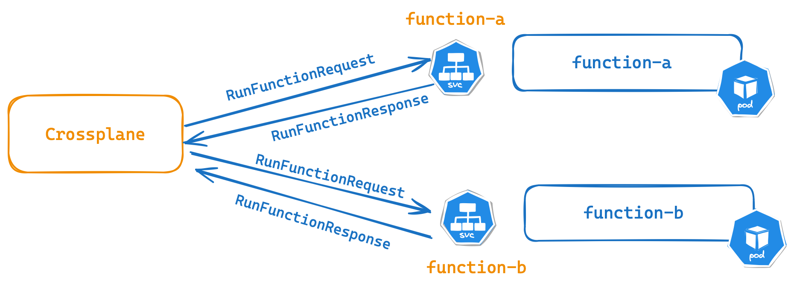
Summary
Crossplane Functions are stateless
Functions can be written in any language
Functions Mutate data and pass it on to the next step, like Unix pipes
A Composition Pipeline executes functions in order
Functions are deployed as a Function type, Crossplane will create the deployment and TLS secrets.
Mutable Compositions
Compositions are mutable , meaning they can be updated as organizational needs evolve.
Updating a Composition can be risky .
Multiple XRs use the same Composition, changes to it will immediately impact all associated XRs .
Updating the XNetwork Composition would affect all XRs using it.
Immediate and widespread impact makes cautious and well-planned updates crucial in Composition management.
What is Composition Revision, and how is it used?
Composition Revisions address the challenges of updating Compositions.
Safer updates by giving the option to XRs to opt out of automatic updates.
Update your XRs to use the latest Composition settings at a pace that suits your needs.
This feature is particularly valuable for testing changes canarying or rolling back some XRs to previous Composition settings without affecting all XRs.
What is Composition Revision, and how is it used?
apiVersion: aws.platformref.upbound.io/v1alpha1
kind: XNetwork
metadata:
name: example
spec:
compositionRef:
name: xnetwork.aws.platformref.upbound.io
compositionUpdatePolicy: Automatic
compositionRevision: xnetwork.aws.platformref.upbound.io-2bgdr
parameters:
id: example
region: eu-central-1
How are Composition Revisions created?
One-to-many relationship between Compositions and Composition RevisionsComposition Revisions created automatically when a Composition is created or updated
Composition controller calculates the hash of the Composition and compares it with the hashes of previous revisionsComposition controller propagates all Composition labels to Composition Revisions
How are Composition Revisions created?
kubectl get compositionrevision -l crossplane.io/composition-name=vpcpostgresqlinstances.aws.database.example.org
NAME REVISION XR-KIND XR-APIVERSION AGE
vpcpostgresqlinstances.aws.database.example.org-139e666 2 CompositePostgreSQLInstance database.example.org/v1alpha1 26h
vpcpostgresqlinstances.aws.database.example.org-3ef0669 1 CompositePostgreSQLInstance database.example.org/v1alpha1 28h
vpcpostgresqlinstances.aws.database.example.org-4b5782c 3 CompositePostgreSQLInstance database.example.org/v1alpha1 80m
vpcpostgresqlinstances.aws.database.example.org-8e3a8ef 5 CompositePostgreSQLInstance database.example.org/v1alpha1 65m
vpcpostgresqlinstances.aws.database.example.org-e8b5d2f 4 CompositePostgreSQLInstance database.example.org/v1alpha1 74m
Implementing Composition Revisions
To implement Composition Revisions, you update the Composition as needed
XRs then have the choice to either adopt the new revision immediately or stick with the previous oneSelective update process allows teams to test new configurations in a controlled manner before wider implementation
Offering a way to roll back changes for some XRs without affecting others, Composition Revisions provide a critical safety net for infrastructure management
Composition Revisions with Configurations
package manager propagates all commonLabels to Composition and Composition Revisions
apiVersion: pkg.crossplane.io/v1
kind: Configuration
metadata:
name: configuration-aws-network
spec:
package: xpkg.upbound.io/upbound/configuration-aws-network:v0.8.0
commonLabels:
version: v0.8.0
How to use CompositionRevisions
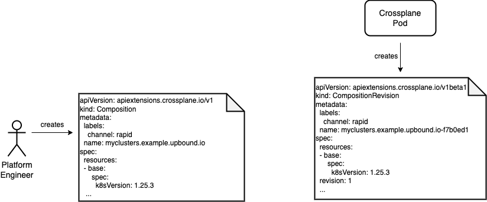
How to use CompositionRevisions
How to use CompositionRevisions
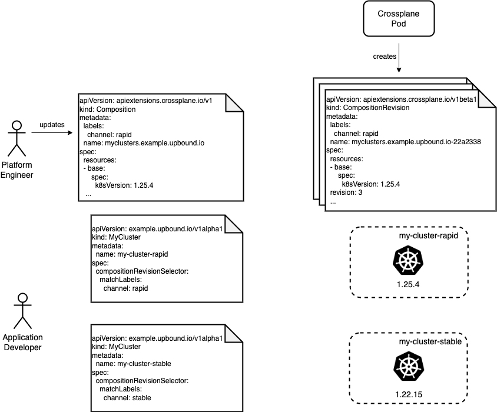
Conclusion
Composition Revisions in Crossplane offer a robust mechanism for safely updating and managing Compositions.
Flexibility to test changes, scale infrastructure, and roll back safely, thus enhancing operational reliability .
Adopting Composition Revisions is a step towards more resilient and controlled infrastructure management in Crossplane.
Further Information
Conclusion
apiVersion: aws.platformref.upbound.io/v1alpha1
kind: XNetwork
metadata:
name: example
spec:
compositionUpdatePolicy: Automatic
compositionRevisionSelector:
matchLabels:
version: v0.8.0
Packages
Crossplane packages are opinionated OCI images that contain a stream of YAML that can be parsed by the Crossplane package manager. Crossplane packages come in three varieties: Providers , Functions , and Configurations .
Provider packages install a Crossplane Provider and CRDs.
A Function package installs a Composition Function.
Configuration packages install XRDs, Compositions, and can include dependencies on other configurations as well as Provider and Function Package. For example, a Configuration can depend on provider-azure, and configuration-azure-network.
Provider Packages
The Provider Package manifest describes how to run the Provider controller on the cluster:
apiVersion: meta.pkg.crossplane.io/v1
kind: Provider
metadata:
name: provider-aws
spec:
crossplane:
version: ">=v1.14.1-0"
dependsOn:
- provider: "xpkg.upbound.io/upbound/provider-family-aws"
version: "v1.14.0"
Configuration Packages
The Configuration Package manifest is mainly concerned with dependencies :
Supported Versions of Crossplane
Other Configurations
Providers
Functions
Configuration Packages
apiVersion: meta.pkg.crossplane.io/v1
kind: Configuration
metadata:
name: my-org-infra
spec:
crossplane:
version: ">=v1.16.2-0"
dependsOn:
- provider: "xpkg.upbound.io/upbound/provider-aws-ec2"
version: ">=v1.14.0"
- function: xpkg.upbound.io/crossplane-contrib/function-patch-and-transform
version: "v0.7.0"
Building Packages
Packages can be built and pushed to an OCI registry using the kubectl crossplane plugin, or via the up CLI using up xpkg. A configuration Package will bundle all the YAML resources in the directory unless the --ignore flag is used (see up xpkg - learn more about up here ) .
See pushing a package (Crossplane docs) or Creating an Pushing Packages (Upbound docs) for more information.
We’ll cover building and pushing Packages in Lab 08.
Installing Packages
Packages can be installed using the kubectl crossplane plugin, or installed by creating Configuration and Package resources on a Kubernetes cluster.
See installing a package (Crossplane docs) or Creating and Pushing Packages (Upbound docs) for more information.
We’ll cover installing a Configuration package in Lab 09.
Lab 08 + Lab 09
Packaging Compositions and Installing a Configuration Package
Lab 08
Packaging Compositions as a Configuration
Prerequisites
You can package your compositions as Crossplane Configuration Packages. See Crossplane Packages documentation for more details.
In this lab, we are going to build a configuration package for the composition that we built in the previous lab.
Create a configuration directory
$ cd composition-crafting/lab08/cloud-spaces/solutions
$ mkdir upbound-config$ cd upbound-config
Create crossplane-aws.yaml containing metadata of the configuration package
apiVersion: meta.pkg.crossplane.io/v1
kind: Configuration
metadata:
name: getting-started-with-aws
annotations:
upbound-guide: getting-started
provider: aws
spec:
crossplane:
version: ">=v1.16.2-0"
dependsOn:
- provider: xpkg.upbound.io/upbound/provider-aws-ec2
version: ">=v1.14.0"
- provider: xpkg.upbound.io/upbound/provider-aws-rds
version: ">=v1.14.0"
- provider: xpkg.upbound.io/upbound/provider-aws-iam
version: ">=v1.14.0"
Put your CompositeResourceDefinitions and Compositions under the same directory
$ cd composition-crafting/lab08/cloud-spaces/solutions
$ cp definition.yaml upbound-config$ cp composition-aws.yaml upbound-config
Build the Configuration
$ cd upbound-config
$ up xpkg build --output=upbound-training-aws.xpkg
xpkg saved to upbound-training-aws.xpkg
Verify creation of the Configuration package
$ ls upbound-training-aws.xpkgCheck the content of oci-package
tar txf upbound-training-aws.xpkg
-rw-r--r-- 0 0 0 343 Dec 31 1969 sha256:59558ad8ee82e2f4ed3b0e554467905069615361b7f89f71699cb1776e4e4343
-rw-r--r-- 0 0 0 2392 Dec 31 1969 d9285e39fe8ae24b8b30ab4c5cf674f3db0ed09d95fc80e42fb6411c416ae66d.tar.gz
-rw-r--r-- 0 0 0 187 Dec 31 1969 manifest.json
Publish the package
Now we can publish our package to the Upbound Registry by logging into our Upbound account. Update the information below for your Upbound account and repository and run the commands. Your upbound account is visible on the top right corner.
Check your username at https://accounts.upbound.io/settings/profile .
$ export ACCOUNT="your Upboud account" $ up login -a ${ACCOUNT}
Create a repository on Upbound Cloud.
$ export USER="your username" $ export REPO=examplerepo-${USER} $ up repository create ${REPO}
<ACCOUNT>/examplerepo-<USER> created
Push the getting started package
$ export VERSION_TAG=v0.0.1$ up xpkg push ${USER} /${REPO} :${VERSION_TAG} -f upbound-training-aws.xpkg
$ xpkg pushed to <ACCOUNT>/examplerepo-<USER>:v0.0.1
Pull The Image
$ docker pull xpkg.upbound.io/<ACCOUNT>/examplerepo-<USER>:v0.0.1
v0.0.1: Pulling from <ACCOUNMT>/examplerepo-<USER>
d9285e39fe8a: Pull complete
Digest: sha256:2f6eaf8141ae6e6f9de937679be9bf5fe91fb367dc413f3a44382d8e145c64d9
Status: Downloaded newer image for xpkg.upbound.io/<ACCOUNT>/examplerepo-<USER>:v0.0.1
xpkg.upbound.io/<ACCOUNT>/examplerepo-<USER>:v0.0.1
Lookup Repository in Upbound Cloud Marketplace console
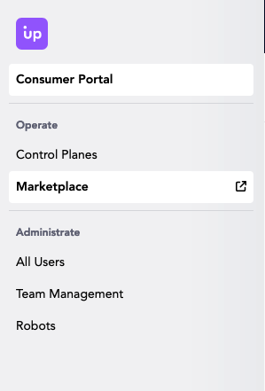
Click on marketplace in the left side panel.
Lookup Repository in Upbound Cloud Marketplace console
Select your organization from the upper right name dropdown.
Login to Upbound Cloud console and verify
Go to your account under Manage to list your repositories. Verify that the configuration package is accepted.
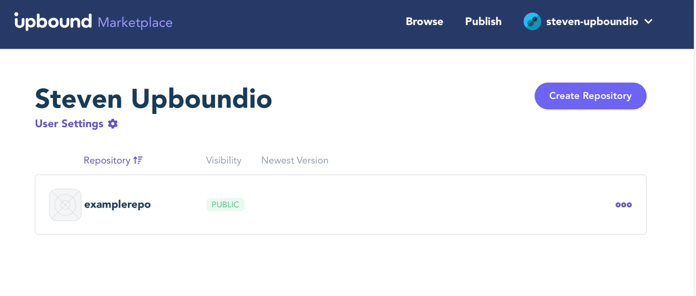
Public Repository Review Requirements
Upbound reviews all public packages, and new repositories have a default publishing policy of requiring a one-time manual approval. Contact the Upbound team via the #upbound channel in the Crossplane Slack to request Upbound to review your package.
Now you can share your configuration with others through the registry.
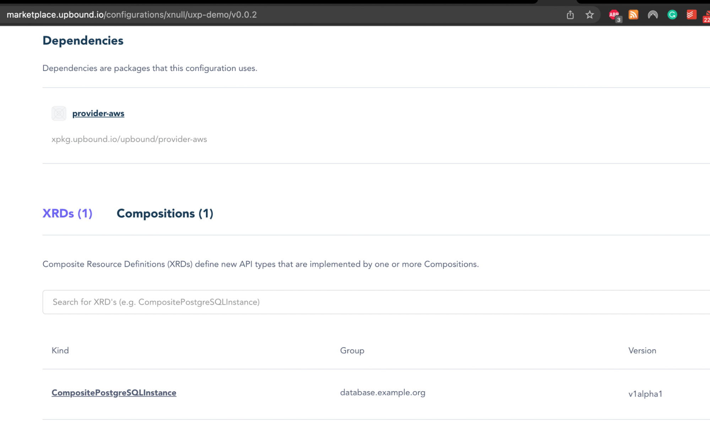
Public Packages
You can make your package Public and it will be available in the Marketplace with documentation after review and approval.
Lab 08 Complete.
Lab 09
Installing a Configuration Package
Lab 09 Prerequisites
Crossplane enables packaging, distributing and sharing infrastructure compositions with Configuration packages.
In this lab, we will install an existing Crossplane configuration, namely platform-ref-aws (on GitHub) or platform-ref-aws (on the Upbound Marketplace) and verify the new composite resources are available for use.
Ensure that you have completed Lab 02, or you have a running Control Plane.
Get the available configuration from the Marketplace
Go to upbound Marketplace and look at the available Configurations: https://marketplace.upbound.io/configurations
Check out the reference platforms
Click on platform-ref-aws and then press the Install Manifest button to see the YAML to install this configuration
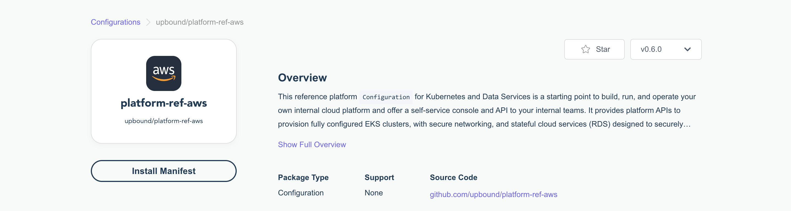
Create platform-ref-aws.yaml
$ vi platform-ref-aws.yaml
apiVersion: pkg.crossplane.io/v1
kind: Configuration
metadata:
name: platform-ref-aws
spec:
package: xpkg.upbound.io/upbound/platform-ref-aws:v1.1.0
Prerequisites
Before installing configuration packages, examine their provider and function version dependencies.
Provder and function version mismatches can cause the package manager to fail installing 2 versions of the same provider or function.
Let's patch our providers and functions, prior to installing the platform reference configuration.
Change Provider and Function versions
$ kubectl get providers
NAME INSTALLED HEALTHY PACKAGE AGE
provider-aws-ec2 True True xpkg.upbound.io/upbound/provider-aws-ec2:v1.14.0 23h
provider-aws-iam True True xpkg.upbound.io/upbound/provider-aws-iam:v1.14.0 4h40m
provider-aws-rds True True xpkg.upbound.io/upbound/provider-aws-rds:v1.14.0 23h
upbound-provider-family-aws True True xpkg.upbound.io/upbound/provider-family-aws:v1.15.0 23h
The platform-ref-aws uses provider versions v1.2.0.
Change Provider and Function versions
$ kubectl edit provider.pkg provider-aws-ec2
1 # Please edit the object below. Lines beginning with a '#' will be ignored,
2 # and an empty file will abort the edit. If an error occurs while saving this file will be
3 # reopened with the relevant failures.
4 #
5 apiVersion: pkg.crossplane.io/v1
6 kind: Provider
7 metadata:
8 annotations:
9 kubectl.kubernetes.io/last-applied-configuration: |
10 {"apiVersion":"pkg.crossplane.io/v1","kind":"Provider","metadata":{"annotations":{},
"name":"provider-aws-ec2"},"spec":{"package":"xpkg.upbound.io/upbound/provider-aws-ec2:v1.14.0"}}
11 creationTimestamp: "2024-10-14T00:15:20Z"
12 generation: 2
13 name: provider-aws-ec2
14 resourceVersion: "118256"
15 uid: 999f984c-ec41-4230-9cd7-3bbff8b81fb4
16 spec:
17 ignoreCrossplaneConstraints: false
18 package: xpkg.upbound.io/upbound/provider-aws-ec2:v1.14.0 # <-- replace with v1.2.0
19 packagePullPolicy: IfNotPresent
...
Change Provider and Function versions
Change the versions to v1.2.0 for the following:
kubectl edit provider.pkg provider-aws-ec2
kubectl edit proivder.pkg provider-aws-iam
kubectl edit provider.pkg provider-aws-rds
Change the version to v0.4.0 for the following:
kubectl edit function.pkg function-patch-and-transform
Install the Configuration package
$ kubectl apply -f platform-ref-aws.yaml
configuration.pkg.crossplane.io/platform-ref-aws created
Check the installed packages and their statuses
$ kubectl get pkg
NAME INSTALLED HEALTHY PACKAGE AGE
configuration.pkg.crossplane.io/platform-ref-aws True True xpkg.upbound.io/upbound/platform-ref-aws:v1.1.0 4m49s
configuration.pkg.crossplane.io/upbound-configuration-app True True xpkg.upbound.io/upbound/configuration-app:v0.5.0 4m42s
configuration.pkg.crossplane.io/upbound-configuration-aws-database True True xpkg.upbound.io/upbound/configuration-aws-database:v0.10.0 4m45s
configuration.pkg.crossplane.io/upbound-configuration-aws-eks True True xpkg.upbound.io/upbound/configuration-aws-eks:v0.11.0 4m43s
configuration.pkg.crossplane.io/upbound-configuration-aws-network True True xpkg.upbound.io/upbound/configuration-aws-network:v0.12.0 4m47s
configuration.pkg.crossplane.io/upbound-configuration-gitops-flux True True xpkg.upbound.io/upbound/configuration-gitops-flux:v0.6.0 4m39s
configuration.pkg.crossplane.io/upbound-configuration-observability-oss True True xpkg.upbound.io/upbound/configuration-observability-oss:v0.5.0 4m40s
NAME INSTALLED HEALTHY PACKAGE AGE
provider.pkg.crossplane.io/crossplane-contrib-provider-helm True True xpkg.upbound.io/crossplane-contrib/provider-helm:v0.17.0 4m37s
provider.pkg.crossplane.io/crossplane-contrib-provider-kubernetes True True xpkg.upbound.io/crossplane-contrib/provider-kubernetes:v0.12.1 4m35s
provider.pkg.crossplane.io/grafana-provider-grafana True True xpkg.upbound.io/grafana/provider-grafana:v0.8.0 4m30s
provider.pkg.crossplane.io/provider-aws-ec2 True True xpkg.upbound.io/upbound/provider-aws-ec2:v1.2.0 23h
provider.pkg.crossplane.io/provider-aws-iam True True xpkg.upbound.io/upbound/provider-aws-iam:v1.2.0 4h24m
provider.pkg.crossplane.io/provider-aws-rds True True xpkg.upbound.io/upbound/provider-aws-rds:v1.2.0 23h
provider.pkg.crossplane.io/upbound-provider-aws-eks True True xpkg.upbound.io/upbound/provider-aws-eks:v1.2.0 4m33s
provider.pkg.crossplane.io/upbound-provider-family-aws True True xpkg.upbound.io/upbound/provider-family-aws:v1.15.0 23h
NAME INSTALLED HEALTHY PACKAGE AGE
function.pkg.crossplane.io/crossplane-contrib-function-patch-and-transform True True xpkg.upbound.io/crossplane-contrib/function-patch-and-transform:v0.4.0 3m42s
Wait until all installed packages are INSTALLED HEALTHY
$ kubectl get pkgrev
NAME HEALTHY REVISION IMAGE STATE DEP-FOUND DEP-INSTALLED AGE
configurationrevision.pkg.crossplane.io/platform-ref-aws-1d75273bf0ef True 1 xpkg.upbound.io/upbound/platform-ref-aws:v1.1.0 Active 15 15 11m
configurationrevision.pkg.crossplane.io/upbound-configuration-app-89cae856ea9e True 1 xpkg.upbound.io/upbound/configuration-app:v0.5.0 Active 2 2 11m
configurationrevision.pkg.crossplane.io/upbound-configuration-aws-database-6ed92d2b20d4 True 1 xpkg.upbound.io/upbound/configuration-aws-database:v0.10.0 Active 5 5 11m
configurationrevision.pkg.crossplane.io/upbound-configuration-aws-eks-5d3ca25dd1c7 True 1 xpkg.upbound.io/upbound/configuration-aws-eks:v0.11.0 Active 8 8 11m
configurationrevision.pkg.crossplane.io/upbound-configuration-aws-network-a8930d8e6c8d True 1 xpkg.upbound.io/upbound/configuration-aws-network:v0.12.0 Active 3 3 11m
configurationrevision.pkg.crossplane.io/upbound-configuration-gitops-flux-2c67344faa7d True 1 xpkg.upbound.io/upbound/configuration-gitops-flux:v0.6.0 Active 2 2 11m
configurationrevision.pkg.crossplane.io/upbound-configuration-observability-oss-c1053436e173 True 1 xpkg.upbound.io/upbound/configuration-observability-oss:v0.5.0 Active 4 4 11m
NAME HEALTHY REVISION IMAGE STATE DEP-FOUND DEP-INSTALLED AGE
providerrevision.pkg.crossplane.io/crossplane-contrib-provider-helm-839e04a83ec3 True 1 xpkg.upbound.io/crossplane-contrib/provider-helm:v0.17.0 Active 11m
providerrevision.pkg.crossplane.io/crossplane-contrib-provider-kubernetes-6ef2ebb6f1db True 1 xpkg.upbound.io/crossplane-contrib/provider-kubernetes:v0.12.1 Active 11m
providerrevision.pkg.crossplane.io/grafana-provider-grafana-ac529c8ce1c6 True 1 xpkg.upbound.io/grafana/provider-grafana:v0.8.0 Active 11m
providerrevision.pkg.crossplane.io/provider-aws-ec2-2f30b431efaa True 2 xpkg.upbound.io/upbound/provider-aws-ec2:v1.2.0 Active 1 1 14m
providerrevision.pkg.crossplane.io/provider-aws-ec2-ee7473ca9d1c True 1 xpkg.upbound.io/upbound/provider-aws-ec2:v1.14.0 Inactive 1 1 23h
providerrevision.pkg.crossplane.io/provider-aws-iam-1195525b7589 True 1 xpkg.upbound.io/upbound/provider-aws-iam:v1.14.0 Inactive 1 1 4h31m
providerrevision.pkg.crossplane.io/provider-aws-iam-7d4669f68208 True 2 xpkg.upbound.io/upbound/provider-aws-iam:v1.2.0 Active 1 1 15m
providerrevision.pkg.crossplane.io/provider-aws-rds-317a2d5a1a9d True 3 xpkg.upbound.io/upbound/provider-aws-rds:v1.2.0 Active 1 1 15m
providerrevision.pkg.crossplane.io/provider-aws-rds-cffcb6120554 True 2 xpkg.upbound.io/upbound/provider-aws-rds:v1.14.0 Inactive 1 1 23h
providerrevision.pkg.crossplane.io/upbound-provider-aws-eks-eb3fb25a5b08 True 1 xpkg.upbound.io/upbound/provider-aws-eks:v1.2.0 Active 1 1 11m
providerrevision.pkg.crossplane.io/upbound-provider-family-aws-08179c904ccc True 1 xpkg.upbound.io/upbound/provider-family-aws:v1.15.0 Active 23h
NAME HEALTHY REVISION IMAGE STATE DEP-FOUND DEP-INSTALLED AGE
functionrevision.pkg.crossplane.io/crossplane-contrib-function-patch-and-transform-97397f24bd9f True 1 xpkg.upbound.io/crossplane-contrib/function-patch-and-transform:v0.4.0 Active 10m
Notice that some provider packages get installed together with the configuration package since they are listed as dependencies in the configuration meta.
Verify that the new Composite Resources types are defined on the cluster
$ kubectl get crds | grep aws.platformref.upbound.io
clusters.aws.platformref.upbound.io 2023-12-27T06:57:16Z
xclusters.aws.platformref.upbound.io 2023-12-27T06:57:11Z
Explore the previous postgreSQL composition?
$ crossplane beta trace PostgreSQLInstance my-db-aws
NAME SYNCED READY STATUS
PostgreSQLInstance/my-db-aws (default) True True Available
└─ CompositePostgreSQLInstance/my-db-aws-x486w False True ReconcileError: ...tionRevision (a FunctionRevision with spec.desiredState: Active)
├─ InternetGateway/my-db-aws-x486w-2r5lg True True Available
├─ RouteTableAssociation/my-db-aws-x486w-hhp4l True True Available
├─ RouteTableAssociation/my-db-aws-x486w-qn696 True True Available
├─ RouteTableAssociation/my-db-aws-x486w-qrzfc True True Available
├─ RouteTable/my-db-aws-x486w-zxv84 True True Available
├─ Route/my-db-aws-x486w-r7c8w True True Available
├─ SecurityGroupRule/my-db-aws-x486w-nnb85 True True Available
├─ SecurityGroup/my-db-aws-x486w-8pk8g True True Available
├─ Subnet/my-db-aws-x486w-m82v5 True True Available
├─ Subnet/my-db-aws-x486w-q5cv7 True True Available
├─ Subnet/my-db-aws-x486w-zc6fw True True Available
├─ VPC/my-db-aws-x486w-6jk4x True True Available
├─ Policy/my-db-aws-x486w-8h9mt True True Available
├─ SubnetGroup/my-db-aws-x486w-8z79b True True Available
└─ Instance/my-db-aws-x486w-jtdlt True True Available
Explore the previous postgreSQL composition?
Note
The package manager installs the function-patch-and-transform prefixed with crossplane-contrib.
We installed it as function-patch-and-transform, and are referencing it as such in our composition.
Let's update our composition.
Update Composition
Replace function-patch-and-transform with crossplane-contrib-function-patch-and-transform.
spec:
compositeTypeRef:
apiVersion: database.example.org/v1alpha1
kind: CompositePostgreSQLInstance
mode: Pipeline
pipeline:
- functionRef:
name: function-patch-and-transform
# name: crossplane-contrib-function-patch-and-transform
input:
apiVersion: pt.fn.crossplane.io/v1beta1
kind: Resources
Verify Composition
$ crossplane beta trace PostgreSQLInstance my-db-aws
NAME SYNCED READY STATUS
PostgreSQLInstance/my-db-aws (default) True True Available
└─ CompositePostgreSQLInstance/my-db-aws-x486w True True Available
├─ InternetGateway/my-db-aws-x486w-2r5lg True True Available
├─ RouteTableAssociation/my-db-aws-x486w-hhp4l True True Available
├─ RouteTableAssociation/my-db-aws-x486w-qn696 True True Available
├─ RouteTableAssociation/my-db-aws-x486w-qrzfc True True Available
├─ RouteTable/my-db-aws-x486w-zxv84 True True Available
├─ Route/my-db-aws-x486w-r7c8w True True Available
├─ SecurityGroupRule/my-db-aws-x486w-nnb85 True True Available
├─ SecurityGroup/my-db-aws-x486w-8pk8g True True Available
├─ Subnet/my-db-aws-x486w-m82v5 True True Available
├─ Subnet/my-db-aws-x486w-q5cv7 True True Available
├─ Subnet/my-db-aws-x486w-zc6fw True True Available
├─ VPC/my-db-aws-x486w-6jk4x True True Available
├─ Policy/my-db-aws-x486w-8h9mt True True Available
├─ SubnetGroup/my-db-aws-x486w-8z79b True True Available
└─ Instance/my-db-aws-x486w-jtdlt True True Available
You can now start creating these resources.
If you’re interested in trying out these resources, see the readme .
Cleanup
Uninstall the Configuration and Provider Packages:
$ kubectl delete -f platform-ref-aws.yaml
configuration.pkg.crossplane.io "platform-ref-aws" deleted
$ kubectl delete postgresqlinstance.database.example.org/my-db-aws
Lab 09 Complete.
LAB 08 + 09 : Summary
At the end of Labs 08 and 09 we have:
Built a Configuration Package with a XRD and Composition
Pushed the Package to an Upbound Registry
Installed, Reviewed, and Deleted a Configuration Package
XRD Best Practices
Use OpenAPI v3 Data Types as a reference
Use description, required, and default fields.
Use Enums for static options for field value
environment:
type: string
enum: [Dev , DR , UAT , Pre-prod , Prod ]
XRD Best Practices
For complex string validations, use pattern
teamEmailAddress:
type: string
pattern: "^[a-zA-Z0-9@\\.]*$"
connectionSecretKeys filter published secrets. They are immutable, so talk to your end users on what secret keys they need.
Composition Best Practices
Start with Functions, either patch-and-transform or go-templating
Always label the Composition for future selection in metadata
Always name Composed Resources in the resources
Use XR Status propagation to share data between resources
Be conscious about composing resources from multiple different providers
It is a supported scenario
Usage kind is available as alpha feature to set deletion ordering.
Ensure that yaml indentation of patches are aligned with base in your manifests.
Use patchSets for repetitive patching and keep Composition DRY.
Policy can be used to make the patch Required (fromFieldPath: Required) and set mergeOptions (keepMapValues: true) when patching arrays or maps. See Composition .
A Required field will prevent the Composition from rendering until it is available.
The Object transform can be used to create complex objects from JSON.
Composition Tips
Label Selectors will match at the Cluster Level on CRDs, ensure labels on any Managed Resources are unique! (See an example in the AWS reference platform where a label is generated from a unique label .
CompositionRevisions v1beta1 status in Crossplane Master allows you to control how Compositions are rendered.
Usages
Optimizing Deletion Sequencing in Composite Resources with the Usage API
Status: alpha, plan to promote to beta with Crossplane v1.18
Crossplane's Eventual Consistency
Crossplane, built on top of Kubernetes, embraces the principle of eventual consistency .
Utilizes constant reconciliation to achieve the desired system state.
This resilient and straightforward approach leads to operations being attempted multiple times, causing temporary failures and warnings .
The model emphasizes resilience, simplicity, and the ability to adapt to changes over time.
Eventual Consistency in Action
EKS and Helm Chart Creation
Kubernetes allows simultaneous requests for creating an EKS Cluster and dependent Helm Charts
The Helm Chart creation depends on the readiness of the EKS Cluster, leading to initial failures for the Helm-Chart until the EKS Cluster is ready
This demonstrates the loosely coupled , eventually consistent model of Kubernetes, where dependencies are managed in a non-linear fashion
Highlights the flexibility of Kubernetes in handling resource management, despite potential initial setbacks
Challenges of Eventual Consistency
Contrast with other IaC systems, which computes a dependency graph to avoid premature operation attempts
approach helps evade unnecessary failures by ensuring dependencies are ready before proceeding
A specific challenge for Crossplane:
potential for resources to become orphaned during deletion , especially when dependent resources are deleted ahead of their dependencies
This issue underscores the need for careful management of dependencies and resource lifecycles within the eventual consistency model
Challenges of Orphaned Managed Resources
Managed Resources (MRs): Key components like a Helm Release within an EKS ClusterOrphaning Scenario: If a dependent MR, such as a Helm Release, is not deleted before its dependency (the EKS Cluster), it risks becoming orphanedImpact: Orphaned resources struggle to complete deletion due to lost connection details, leaving them in limbo
Proper deletion order is crucial to prevent MRs from becoming orphaned, highlighting the need for resource lifecycle management
Side-Effect Resources & Cascading Deletion
Side-Effect Resources : Resources created indirectly by other resources (e.g., LB spawned by a Kubernetes Service)Orphaning Risk : Similar to MRs, if not managed correctly during deletion, these resources can become orphaned, leading to resource leakage and management overheadBackground Cascading Deletion : Kubernetes' default policy where parent resource deletion does not automatically ensure the deletion of its children, potentially resulting in orphaned resources.Management Implication : Awareness and proactive management of resource dependencies are essential to mitigate the risk of orphaning, especially in complex Kubernetes environments.
Usage API
The Usage API defines resource relationships, specifying users and uses. Usage
apiVersion: apiextensions.crossplane.io/v1alpha1
kind: Usage
metadata:
name: usageXInitByXCore
spec:
of:
apiVersion: spaces.upbound.io/v1alpha1
kind: XInit
resourceSelector:
matchControllerRef: true
by:
apiVersion: spaces.upbound.io/v1alpha1
kind: XCore
resourceSelector:
matchControllerRef: true
Protect Resources
Another use case for Usage is to protect a resource from being deleted without necessarily being used by another resource
apiVersion: apiextensions.crossplane.io/v1alpha1
kind: Usage
spec:
reason: "Production Database - should never be deleted"
of:
apiVersion: rds.aws.upbound.io/v1beta1
kind: Instance
resourceRef:
name: my-cluster
Seamless Deletion with Background Propagation Policy
Policy Overview : With the default background propagation policy, deleting a Claim or Composite containing a Usage Relationship is straightforwardUser Experience : Users can delete Claims or Composites without encountering errors. The deletion process initiates immediatelyBehind-the-Scenes : The Kubernetes garbage collector takes over, deleting Composed Resources and Usage resources in the backgroundImpact on Timing : Although the garbage collection of all Composed Resources takes longer, this process remains invisible to the user, ensuring a smooth experience
Deletion Dynamics with Foreground Propagation
Policy Difference : The foreground propagation policy alters the deletion timeline but not the error-free ability to delete Claims or Composites.Deletion Process : The deletion of Claims or Composites is delayed, awaiting the removal of all Composed Resources as usual. However, the process extends further, pausing until Usage resources and their linked used resources are deleted.User Impact : While users won't face errors during deletion, they will notice a lengthier wait time as the system ensures all dependencies are cleanly removed before completing the deletion process.Key Takeaway : The choice of propagation policy influences the deletion timeline, highlighting the importance of understanding policy implications on resource management.
this corresponds to slides 1-5 of the old master deck
slide 1
this corresponds to NEW slides 6-14 of the master deck
slide 6
slide 10
begin SPEAKER NOTES
The resources you are using with the API. It is part of Crossplane inherently, features we require providers to implement for all the X they implement. Guarantees how we can interact with the provider. Use these as building blocks. Consume them address them in a common way. Community strategy to get providers to participate - end users need to write the providers, can we support them in doing this? Packaging is related to the resource model - reproduce the same platform across cluster effectively. OCI images - easy to build and distribute these things, create an ecosystem. Like OSS
Composability - these resources are very composable, our model vs. Terraform - taking the abstraction ( persistent object model) developers who are provisioning an abstraction they don’t ever get permissions to create a RDS instance - instead you create the abstract type and our system responds to … bringing the level of permissionig to the level of abstraction. Better permission model.
To usher in this new era of automation, we are investing in formalizing the underpinnings of Crossplane, in the same way that Kubernetes has formalized the Kubernetes Resource Model or KRM. We created the Crossplane Resource Model which is an extension of the Kubernetes Resource Model to get consistency across the different vendors when you are provisioning resources.
Crossplane defines a strict extension to KRM that we empathetically call the Crossplane Resource Model or XRM for short. It captures the lessons the community has learned in managing cloud services and resources. It deals with external naming, identity, and adoption of existing resources. It includes cross resource references which enables creating graphs of inter-dependent resources. Handling Connection secrets and credentials. Composition, the popular feature that enables platform teams to define new self-service APIs for their application teams. And finally a package manager designed for Crossplane scenarios.
end SPEAKER NOTES
slide 12
begin SPEAKER NOTES
Things to note:
An XRM is a Kubernetes custom resource with extra features.
We’ll get more into patching when we get to composition
end SPEAKER NOTES
this corresponds to labs 1-4
slide 41

TODO add gcp
TODO: add GCP Deployed line
this corresponds to slides 15-27 of the old master deck
slide 58
this corresponds to labs 5-7
- LAB 05: Building a Composition [AWS](lab05/aws/lab05.md)
TODO: add gcp Lab
Lab 05
slide 94
- LAB 06: Extending a Composition [AWS](lab06/aws/lab06.md)
TODO: add gcp Lab
Lab 06
slide 110
- LAB 07: XR Status Patching [AWS](lab07/aws/lab07.md)
TODO: add gcp Lab
Lab 07
this corresponds to lab 10
slide 160
this corresponds to labs 8-9
this corresponds to slides 63-66 (best practices - between lab 9 and advanced compositions) of the old master deck